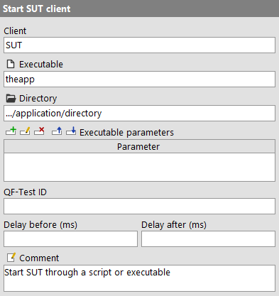
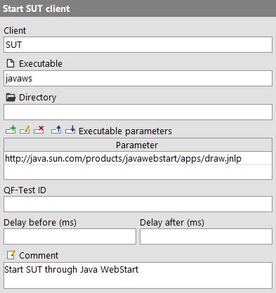
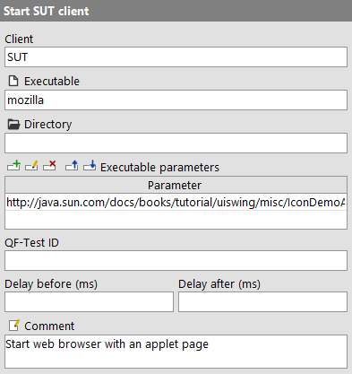
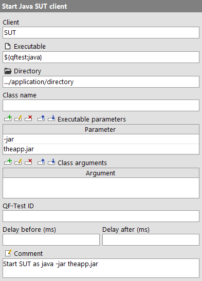
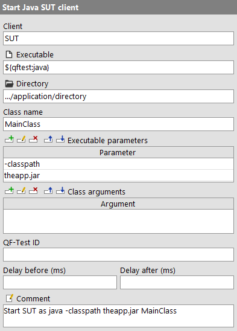
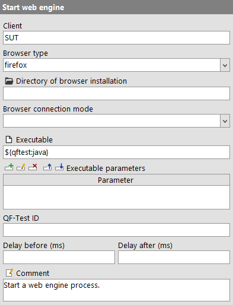
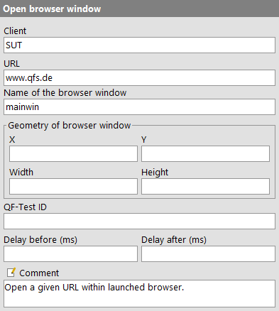
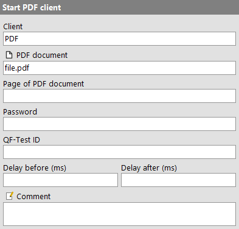

| Version 6.0.3 |
NoteThe Setup sequence creation is the recommended tool to set up your SUT for testing. It results in an advanced setup sequence already prepared for later requirements.
This chapter contains some details in case you want to create a setup sequence yourself.
With the Quickstart Wizard QF-Test offers a utility to guide you through the steps of creating a start sequence for your SUT. Please refer to chapter 3 for more information about the Quickstart Wizard.
Nevertheless we also want to describe how to create a start sequence for your
application manually. There are basically two ways to start a Java application as an
SUT from QF-Test. The first one is based on the standard java ... command line
with its two variants for either starting a class or a jar file. The alternative is
running a script or executable file which will then start the Java program. Indirect
methods like launching the SUT through ant also fall into this category, as
do Java WebStart and applets run in the Java plugin of a web browser.
The following examples show some typical setups. To get more detailed information about the required attributes, please follow the respective links to the reference manual. The tutorial also includes a number of examples.
Independent of how the SUT is started, the respective node should typically be followed immediately by a 'Wait for client to connect' node with an identical 'Client' attribute. Again, see the reference manual for further details.
If your application is started through a script or a binary executable, create a 'Start SUT client' as follows:
|
|  | ||
|
| Figure 42.1: Starting the SUT from a script or executable | ||
PATH, the full path is required.
>myapp.log) which you may want to remove
so that the output of the SUT reaches QF-Test and is captured in the run-log.
Similarly, the start command in Windows batch files causes the SUT
to detach and keeps the output away from QF-Test.
Using the new connection mechanism, an application launched through Java WebStart can be started directly from QF-Test without the need to modify any JNLP files (so do not use »Extras«-»Create WebStart SUT client starter...«). Instead create a 'Start SUT client' node as follows:
|
|  | ||
|
| Figure 42.2: Starting the SUT through Java WebStart | ||
javaws and located somewhere inside the JDK or
JRE. You'll probably have to specify the full path.
.javaws which can contain settings like debug levels.
Applet testing can be done directly in a browser.
Note In case you own a license that allows web testing with QF-Test and the supported browsers suffice you can also use the "normal" web testing feature (Quickstart your application).
|
|  | ||
|
| Figure 42.3: Starting the SUT as an applet in a web browser | ||
firefox, iexplore, chrome,
safari to name just a few. You may have to specify the full path.
NoteImportant notes on applet testing
Applet testing will only work in a reliable way when
The procedure qfs.web.browser.general.startAsNewProcess that is also used when creating
the start sequence with the Setup sequence creation should solve the first two points.
It uses browser specific parameters to ensure a new process when possible and avoids blocking dialogs
e.g. by using new empty profiles. Please see the procedure documentation for further details.
WindowsConcerning Windows 8 there are following means to ensure Internet Explorer is started as desktop application:
or directly change set the registry key
HKEY_CURRENT_USER\Software\Microsoft\Internet Explorer\Main\AssociationActivationModeto value 2.
0 = Let Internet Explorer decide
1 = Always in Internet Explorer (this is Metro IE)
2 = Always in Internet Explorer on the desktop
Further background information
As described above, the qfs.web.browser.general.startAsNewProcess helps to ensure a new
process. Hence some hints should be given on some of the techniques used. You can have a look the
procedures code as well, of course.
WindowsThere are different command line parameters for different Internet Explorer versions to force a new process is being started:
(See also http://msdn.microsoft.com/en-us/library/hh826025%28v=vs.85%29.aspx). There is also the option to ensure this behavior be respective settings in the registry but using the commandline parameters is the less invasive way.
Note Firefox has a built-in session restore feature that causes conflicts with QF-Test. When QF-Test terminates a Java applet and thus the browser, Firefox treats this as a crash and offers to restore the session on the next start through a dialog that cannot be controlled by QF-Test so that the test cannot continue unobserved.
To work around this problem, either always start with an empty new profile or create
a separate user profile as described at http://kb.mozillazine.org/Profile_Manager and always start Firefox from QF-Test
with this profile using the command firefox -P <profile>. Then
disable session restore for this user by editing the preferences as described at http://kb.mozillazine.org/Editing_configuration. You need to add an option
called browser.sessionstore.resume_from_crash and set it to
false.
java -jar <archive>
If your application is normally launched through a command of the form java -jar
<archive>, create a 'Start Java SUT client' node as follows:
|
|  | ||
|
| Figure 42.4: Starting the SUT from a jar archive | ||
${qftest:java} is the java executable that QF-Test
was started with.
-jar and the second to the name of the
archive. Unless the archive is located in the 'Directory'
selected above, its full path is required.
java -classpath <classpath> <class>
If your application is normally launched through a command of the form java
-classpath <classpath> <class>, create a
'Start Java SUT client' node as follows:
|
|  | ||
|
| Figure 42.5: Starting the SUT via the main class | ||
${qftest:java} is the java executable that QF-Test
was started with.
main() method), just
like for java.
-classpath and the second to the list of jar files
and directories that constitute the classpath. The full path is
required for jar archives not located in the
'Directory' selected above. This argument
can get very long and hard to edit directly in the table. See
subsection 2.2.5 about how to pop up a dialog for
more convenient editing.
Like Swing, JavaFX or SWT clients, a web-based SUT - i.e. a browser - is started as a separate process from within QF-Test. In order to gain access to the internals of the browser and the web page shown with its Document Object Model (DOM), QF-Test embeds a standard browser like Internet Explorer or Mozilla in a special wrapper application. The technology for embedding and accessing those standard browsers enables efficient access to the DOM beyond the browsers' standard interfaces and a unified interface that hides browser differences and enables QF-Test - and thus you - to focus on test automation with a single set of tests for all supported browsers on multiple platforms.
A 'Start web engine' node can be used to launch a browser.
|
|  | ||
|
| Figure 42.6: Launch the browser process | ||
Browser windows can be opened via a 'Open browser window' node in an already running process.
|
|  | ||
|
| Figure 42.7: Open the web site in the browser | ||
Note When setting up the startup sequence with the Setup sequence creation or defining your own 'Directory of browser installation' attribute, try pointing QF-Test to a current Firefox installation. On Linux, the standard browser for your distribution may be installed in various places.
4.2+ QF-Test allows to verify PDF documents. Therefore, a client is started as separate process within QF-Test. In order to gain access to the internals of the PDF document and its components QF-Test analyzes the document in its own viewer.
|
|  | ||
|
| Figure 42.8: Opening a PDF Document | ||
A 'Start PDF client' node can be used to launch the viewer and to open the PDF document.
More information can be found in chapter 16.
| Last update: 9/6/2022 Copyright © 1999-2022 Quality First Software GmbH |